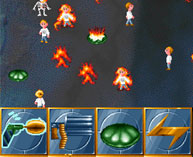

Nerdkill for BeOS, C#, Java, Android, and Web
Description |
Pocket PC |
Android |
Web |
News |
Downloads |
Contact
Description
|
Summary
A blast-all-these-nerds game.
Get rid of these annoying nerds. Shoot them, gun them, electrify them,
explode them!
No one must escape!
The game was originally developed for the Amiga (see History
below) and I freely adapted it to the BeOS, as a short coding joke for
Paris' Be GeekFest, Feb'97
with the much needed help of Pulco
and SpH.
Now rewritten entirely from scratch for Windows .Net 1.1 and Managed
DirectX, it includes the same cute little graphics as the BeOS
version and the same vocal sound effects to provide countless hours of
fun.
In May 2004, I also ported the game to Pocket PC. More information on
the Pocket PC section below.
In March 2007, I also ported the game to Java 1.4 and Java 5.
More information on the Java section below.
In November 2015, I also ported the game to Android, starting with Android 1.5 (a.k.a "Cupcake").
More information on the Android section below.
In December 2023, I also ported the game to web, experimenting with both the Defold game engine
as well as the Godot 4 game engine.
More information on the web section below.
|

(click on picture for enlarged view) |
What is Nerdkill?
Nerdkill is a simple game whose main purpose is to help you remove
stress and enjoy life better.
The game displays a bunch of little annoying moving nerds and a diverse collection
of weapons. Select a weapon and aim at one of those little nerds and enjoy --
that's all it takes :-)
Sure, it doesn't take much to amuse me -- what about you?
The game is implemented using C#,Windows
.Net 1.1 and Managed DirectX.
Sources are included in the binary package. The whole
thing uses an Open Source license.
At this point, I need to clarify that Nerdkill's core purpose is not really about the game
-- the gameplay is actually fairly inexistent and has never evolved since the first BeOS version.
Instead, Nerdkill has evolved in my go-to project to experiment with different platforms.
Whenever I need to learn a new programming environment or SDK, Nerdkill is my go-to project,
purposely because the "game" itself is so simple.
It's fun yet doesn't get in the way of learning the platform.
The versions listed here are only the ones that have been finished and polished enough to be publicly listed.
On top of the official BeOS, C#, Java, Android, and web versions, I've also experimented with other versions;
for example at some point I had an implementation written in Vanilla JS
and another in Unity.
Notes
Notes for the Windows desktop version (for Pocket PC, see below):
Politically correctness statement & warning:
- If you find the content of the game objectionable, please do not use it
and do not let your children use it.
- The game is not intended to promote antagonism, violence or hate against
any kind of people, religion, race or class, especially nerds.
- The lack of any score is actually a philosophical statement.
- All characters used in the game are fictitious.
Usage:
- Turn on the speakers -- but not too loud :-)
- Start the game.
- Select a weapon (by default the gun is selected).
- Click on one of the moving little nerds and watch.
- Try different weapons.
Goals & strategies:
- There is no goal. The game quits when all the nerds are eliminated.
- There is no score. On purpose. Just relax :-)
- One strategy is to aim at every single nerd using a precision weapon.
- A reverse strategy is to use a wider scope weapon, such as the dynamite.
- I particularly enjoy the chain reaction of mines.
- Although it is technically possible to finish the game using solely the
bulldozer or the coke can, it can be really tedious. Try it.
Compatibility issues:
- Sound is optional. DirectDraw is not.
- A mouse is required
too (a trackpad works ;-)).
- Should run correctly on any recent hardware with 2D support. No fancy 3D
required :)
- On an older ATI Mach64 w/ Win98, sprites
may have a black contour instead of being transparent. I guess the card doesn't
do source overlay.
History
Nerdkill 1.0.0 BeOS was
released around 1997/1998.
I first saw Nerdkill on a roommate's Amiga 4000 back in '93 or '94 at the university.
The game was developed by Adam Girvin.
As an early BeOS adopter,
I wanted something fun to do and so I started writing a clone several years
later using whatever I had in mind that I saw back on the Amiga. The first version
was coded in little more than a night or two, right before the
Paris' Be GeekFest, Feb'97.
Two friends, Pulco
and SpH helped with the graphics and the sound "effects". At the time
I was able to run an original Nerdkill.lha on an Amiga emulator, but for no
more than a few seconds. We added a couple of improvements on the original version
and never tried to write a perfect clone -- just something fun to watch and
play. Later, we had some ideas about a 3D version and some improvements but
we never followed through -- also I believe it would have removed the simplicity
of the original version.
Several years later on another continent, I was in need of some C#
coding practice. Once again Nerdkill was the ideal candidate. The game is simplistic
enough in that it doesn't interfere with the coding practice and it's fun enough
to allow completion of the project before my mind flies somewhere else ;-).
What is the Nerdkill License?
You can consult the extract terms of the license here: Nerdkill
License.
The Nerdkill is licensed under the GNU
General Public License, an Open
Source approved license.
I am not a lawyer and I find
the complete text of the license generally
obscure to read, so what it all means is:
- Nerdkill is free software, it can be used at absolutely no cost.
- It comes "as-is". No guarantee, support, maintenance or installation
help is implied.
- You are free to add any feature that you think is missing, or change the
source code or the look to match your own needs. I'm interested in learning
about any feature you add, yet I make no promise I'll actually reuse your
code. If you redistribute your own version, please use the same license and
make it easy to differentiate your sources from mine.
- I love positive feedback and positive criticism. An extended to-do list
of things I'd like to see in the software at some point is included in the
source archive. Of course there is no written schedule for this, it all depends
on my free time and my creativity. If you need something that is not on this
list, please ask gently.
- Your respect will earn you mine.
Pocket PC
 In
early 2004, Code Project ran a coding
contest which goal was to write "something interesting" using
the .Net Compact Framework. That motivated me to do something I though was interesting:
explore the capabilities of .Net Compact Framework 1.1 to host a 100% managed
game; Nerdkill C# was the perfect choice.
In
early 2004, Code Project ran a coding
contest which goal was to write "something interesting" using
the .Net Compact Framework. That motivated me to do something I though was interesting:
explore the capabilities of .Net Compact Framework 1.1 to host a 100% managed
game; Nerdkill C# was the perfect choice.
Nerdkill C# had mostly been started as a way to explore the Direct X Managed
API. I also experimented with a modular
platform that would be easy to adapt to other games or other host implementations.
Both these goals were met successfully.
Nerdkill Pocket was thus started with these two goals in mind: first examine
how portable the modular
platform was and what work it would involve to "port" it to the
Pocket PC and second examine how capable .Net Compact Framework 1.1 really is.
Could a 2D Sprite-based game really be written in 100% managed code?
The short answers are yes and almost yes.
If you're a developer, you may be interested in the detailed results as described
in the Code Project
Nerdkill Pocket article (mirror available
here.)
In June 2004, Nerdkill
Pocket was awarded the "Best
Use of Technology" by Code Project
:-)
Download links are available in the Code
Project Nerdkill Pocket article as well as in the download
section below.
Java
In March 2007, I ported the game to Java. This took only a handful of days, since the engine
was initally designed to be easily portable. Converting C# to Java is also a mostly
straighforward operation.
Download links are available in below.
The best way to play Nerdkill Java is to simply use the Webstart link. This is an
on-line installer that will seamlessly install Nerdkill Java on your computer and run it.
This works out of the box on Windows and MacOS.
For Linux, if you have Java installed, you can download the JAR file and execute it from
the command line.
Note that I may adapt the game to phone later using J2ME.
Android
An Android version has been available since 2015 for Android 1.5 ("Cupcake") and above, and regularly updated as needed.
The Android implementation used the Java desktop version as a base.
I reimplemented the core game engine to be more efficient on Android.
That game engine was then reused later as the base for Asqare.
The latest Android version of Nerdkill
can be found in the Google Play store for free:

Web
I have implemented a number of version of Nerdkill for the web.
In 2016, I implemented a version in Vanilla JS yet never published it.
Based on that experience, I decided the best way to write a game for the web was to use one of the many game engines available.
In 2017, I rewrote the game using the Unity game engine.
I wasn't fully satisfied with Unity for a variety of technical reasons;
that lead me to discover the Godot game engine.
In 2022 I rewrote it using Godot, which turned to be much more superior in many ways.
In 2023, I rewrote it again using the Defold game engine,
as well as the latest Godot 4.2 game engine.
The latest versions can be found here:
The experience was quite conclusive.
Defold was surprisingly lightweight and delightful to learn.
Without knowing anything of the game engine, I got the game ported in less than a week.
Defold seems very well tailored for lightweight 2D games, from sprite sheet creation to adding sound support,
from Lua scripting to game objects and message passing, everything is fairly clear, with simple tutorials to learn it on the go.
Godot was as easy to go back to it as when I last used it. Although the latest
version 4 changes some APIs, the concepts remain the same and are easy to adjust accordingly. Godot basically provides
everything one may need; the documentation is excellent, GDScript is a pleasure to use, and there are lots of tutorials and help out there.
If I had to chose, I'd likely select Defold again for simple lightweight one-time projects, and Godot for longer term projects.
It's worth noting that both game engines have very similar structures and it's thus easy to transition from one to the other.
News
| June 23, 2004 |
|
Nerdkill
Pocket is awarded the "Best
Use of Technology" by Code
Project. |
| May 27, 2004 |
|
Version 1.0 of Nerdkill Pocket
completed. GPL license. |
| May 22, 2004 |
|
Version 1.1 of Nerdkill C# completed and
ready to download. Uses the GNU General Public
License. |
| December 17, 2003 |
|
download available!
Nerdkill C# was rated 4 cows!
See the Nerdkill
C# Preview Page on Tucows for more information. |
| November 20, 2003 |
|
Moved to new projects
location. |
| November 7, 2003 |
|
Version 1.0 of Nerdkill C# completed and
ready to download. |
| November 3, 2003 |
|
Created this web page to advertise and distribute
the project. |
| September 22, 2003 |
|
First real design & implementation in
C#. |
| December 31, 2002 |
|
Not much really -- just "Oh let's
use C# and DirectX".
But shortly after the champagne inhibited any will to code and the idea
sunk like lead in the sea.
|
| September 1998 |
|
Last official version of Nerdkill
1.0 for BeOS x86 & PPC.
|
Downloads
Nerdkill C# (Desktop)
|
Nerdkill Pocket (Pocket PC)
|
Nerdkill Java (Desktop)
|
Nerdkill Android
|
Nerdkill Web
Note: most download links have been removed due to spam bot abuse.
|
Nerdill C# (desktop version) |
Nerdkill C#
v1.1
May 22, 2004
|
Nerdkill C# Version 1.1 is the most recent stable &
only revision.
Available here and as well as on !
|
|
| |
| Kind: |
Web based installer for Internet Explorer |
| Content: |
Executable & sources |
| File: |
NerdkillWebSetup_v110.Exe |
|
[notes] |
[130 kB] |
| |
| Kind: |
Zip with Microsoft Installer Windows package |
| Content: |
Executable & sources |
| File: |
NerdkillCs_v110.zip |
|
[notes] |
[2.5 MB] |
| |
| Kind: |
Zip archive |
| Content: |
Sources |
| File: |
NerdkillCsSources_v110.zip |
|
[notes] |
[1 MB] |
| |
|
|
| |
Important: .Net Framework 1.1 and DirectX 9 Managed
are required to run this program!
If you do not have .Net Framework 1.1 nor the DirectX 9 End-User Runtime,
download the latest version from the Microsoft
Windows Update.
If you have DirectX 9, you must install DX9 Managed before running Nerdkill.
The installer (.msi) package can be found in the complete DX9 download;
it is included here for your convenience (this version may be obsolete):
|
|
| |
mdxredist (DX9 Managed).msi
|
[notes] |
[1 MB] |
| |
Nerdkill C#
v1.0
Nov 7, 2004
|
Nerdkill C# Version 1.0 is the previous version.
It is no longer available. Please use version 1.1 instead.
|
|
| |
|
Nerdkill Pocket (Pocket PC version) |
Nerdkill Pocket
v1.0
June 27, 2004
|
Nerdkill Pocket Version 1.0 is the most recent stable
& only revision.
Available on Code
Project as well as here.
|
|
| |
| Kind: |
CAB Installer for Pocket PC / ARM |
| Content: |
Executable for .Net CF 1.1 |
| File: |
NerdkillPocket_v100_ARM.zip |
|
[notes] |
[406 kB] |
| |
| Kind: |
CAB Installer for Pocket PC / MIPS |
| Content: |
Executable for .Net CF 1.1 |
| File: |
NerdkillPocket_v100_MIPS.zip |
|
[notes] |
[406 kB] |
| |
| Kind: |
CAB Installer for Pocket PC / x86 |
| Content: |
Executable for .Net CF 1.1 |
| File: |
NerdkillPocket_v100_x86.zip |
|
[notes] |
[406 kB] |
| |
| Kind: |
Zip archive |
| Content: |
Sources |
| File: |
NerdkillPocket_Src_v100.zip |
|
[notes] |
[462 kB] |
| |
|
|
| |
Important: .Net Compact Framework 1.1 is required to
run this program!
|
|
| |
Instructions for CAB files: unzip the archive, copy the CAB
file to your Pocket PC using ActiveSync and then execute it using the File
Explorer. This will install .Net Compact Framework 1.1 as needed as well
as the Nerdkill Pocket executable. Use the File Explorer to start Nerdkill
(you can add a link to the Start Menu or the Program files if you want.) |
|
| |
|
Nerdkill Java |
Nerdkill Java
v1.0
March 11, 2007
|
Nerdkill Java 1.0 is the most recent stable
& only revision.
|
|
| |
| Kind: |
Java archive (JAR) |
| Content: |
Executable for all Java 1.4 platorms |
| File: |
NerdkillJava001.jar |
|
[notes] |
[907 kB] |
| |
| Kind: |
Webstart File (online installer) |
| Link: |
NerdkillJava.jnlp |
|
[notes] |
[406 kB] |
| |
| Kind: |
Source Code |
| Link: |
http://code.google.com/p/nerdkill/source |
|
[notes] |
[406 kB] |
| |
|
|
| |
If you want to run the game using a command line, download the JAR file then
type the following command in a terminal:
java -jar NerdkillJava001.jar
|
|
| |
|
Nerdkill Android |
| |
The latest Android version of Nerdkill
can be found in the Google Play store for free:
|
|
|
| |
|
Nerdkill Web |
| |
|
|
|
| |
|
|
|
| |
Contact
Nerdkill is developed and maintained by Le R'alf'
{kind=link}